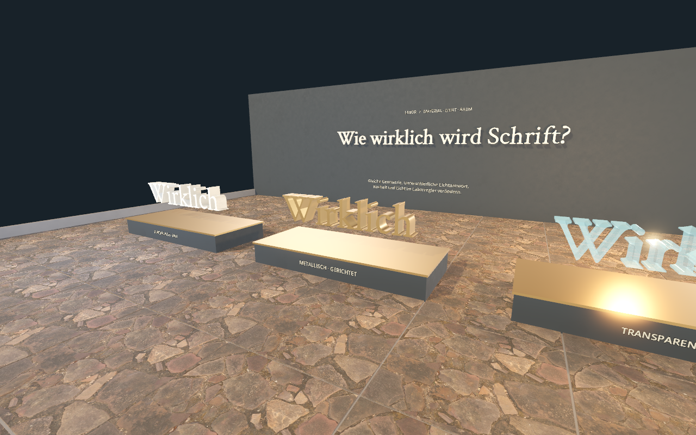

PLATON / POLITEIA / GODOT
Begehbare
Gedanken.
Sonne, Linie und Höhle als dreidimensionale Textlandschaften. Erkunde die Gleichnisse und untersuche im Materiallabor, wie wirklich Schrift wirken kann.
Ohne Installation. Der erste Start lädt die 3D-Anwendung und kann einen Moment dauern. Für die freie Bewegung: Computer mit Tastatur und Maus.
Steuerung: Mit «Navigation einklappen» wird der Raum frei. WASD bewegt dich; ← / → drehen dich. Zum Umschauen die linke oder rechte Maustaste gedrückt halten und die Maus bewegen. Shift beschleunigt. G schaltet den Freiflug ein; Leertaste / Strg bewegt aufwärts / abwärts. N klappt die Navigation ein oder aus; Esc öffnet sie. Alle Kapitel erreichst du über das Menü. P speichert ein Bild.
Dieser Browser bietet kein WebGL 2.0. Nutze einen aktuellen Browser oder das macOS-Paket. Die Originaltexte sind auch ohne 3D lesbar.
